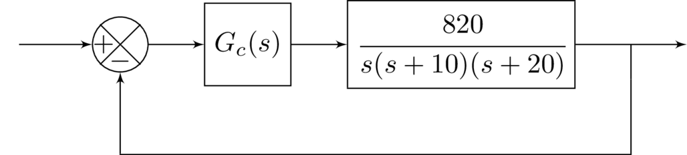

Contents
ELEC 360 --- Assignment 2
Due Nov 17 (approximate), from Ogata --- Control Systems
clear all close all format compact format rat
Question 1: B-6-7
Plot the root loci for the system shown in Figure 6–100. Determine the range of gain K for stability

Create the equation block diagram in matlab
G1 = tf([1,1],[1,5]) G2 = tf([2],[1 2 0 0]) Geq = G1 *G2
G1 =
s + 1
-----
s + 5
Continuous-time transfer function.
G2 =
2
-----------
s^3 + 2 s^2
Continuous-time transfer function.
Geq =
2 s + 2
--------------------
s^4 + 7 s^3 + 10 s^2
Continuous-time transfer function.
Compute the feedback loop using negative unity feedback, by default assumes feedback(sys1,sys2) assumes negative feedback and is equivalent to feedback(sys1,sys2,-1).
rlocus(Geq) print('rlocusQ67NoAnno.png','-dpng','-r300')
Compute stability
syms s K EPS Gfeed = feedback(Geq,1) polyVector = sym2poly(s^4 + 7*s^3 + 10*s^2 + 2*s + 2) polyVector2 = [1 7 10 2*K 2*K] table = simplify(routh(polyVector2,EPS))
Gfeed =
2 s + 2
------------------------------
s^4 + 7 s^3 + 10 s^2 + 2 s + 2
Continuous-time transfer function.
polyVector =
1 7 10 2 2
polyVector2 =
[ 1, 7, 10, 2*K, 2*K]
table =
[ 1, 10, 2*K]
[ 7, 2*K, 0]
[ 10 - (2*K)/7, 2*K, 0]
[ (K*(2*K - 21))/(K - 35), 0, 0]
[ 2*K, 0, 0]
\begin{array}{ccc} 1 & 10 & 2\,K\\ 7 & 2\,K & 0\\ 10-\frac{2\,K}{7} & 2\,K & 0\\ \frac{K\,\left(2\,K-21\right)}{K-35} & 0 & 0\\ 2\,K & 0 & 0 \end{array}
The system will be stable when 0 < K < 21 /2 checking with RouthHurwitz
RouthHurwitz([1 7 10 0 0]) RouthHurwitz([1 7 10 21 21])
Routh-Hurwitz Table:
rhTable =
1 10 0
7 0 0
10 0 0
1/100 0 0
1/100 0 0
~~~~~> it is a stable system! <~~~~~
Number of right hand side poles = 0
Given polynomial coefficients roots :
sysRoots =
0
0
-5
-2
ans =
1 10 0
7 0 0
10 0 0
1/100 0 0
1/100 0 0
Routh-Hurwitz Table:
rhTable =
1 10 21
7 21 0
7 21 0
1/100 0 0
21 0 0
~~~~~> it is a stable system! <~~~~~
Number of right hand side poles = 0
Given polynomial coefficients roots :
sysRoots =
-3191/551 + 0i
-1/4238682002231055 + 1351/780i
-1/4238682002231055 - 1351/780i
-666/551 + 0i
ans =
1 10 21
7 21 0
7 21 0
1/100 0 0
21 0 0
The system is stable when the 0 < K < 10.5
Question 2: B-6-14
Consider the system shown in Figure 6–104. Plot the root loci for the system. Determine the value of K such that the damping ratio  of the dominant closed-loop poles is 0.5. Then determine all closed-loop poles. Plot the unitstep response curve with MATLAB.
of the dominant closed-loop poles is 0.5. Then determine all closed-loop poles. Plot the unitstep response curve with MATLAB.
Since  ,
,  , then since
, then since  and
and  .
.  , normalizing gives
, normalizing gives 
\begin{align} & 1 + \frac{K}{s^3+4s^2+5s} = s^3+4s^2+5s+K =0 \\ & = (-x + j\sqrt(3)x)^3+4(-x + j\sqrt(3)x)^2+5(-x + j\sqrt(3)x) + K = 0 \\ & = K +8x^3+(-8-8j\sqrt(3))x^2+j5\sqrt(3)x-5x=0 \\ \end{align}
Equating real and imaginary parts
\begin{align} & 8x^3-8x^2-5x+ K = 0 \\ & -j8\sqrt(3)x^2+j5\sqrt(3)x=0 \end{align}
Solving for x, gives 
$ 8(5/8)^3-8(5/8)^2-5(5/8)+ K=0$
leads to 
Plot root locus
G = tf([1],[1 4 5 0]) rlocus(G) sgrid print('rlocusQ614NoAnno.png','-dpng','-r300')
G =
1
-----------------
s^3 + 4 s^2 + 5 s
Continuous-time transfer function.
from the root locus, the gain is about K = 4.27
Plot step response, take C(s) / R(s)
Geq = feedback(G,1)
GeqS = Geq*4.2969
% take coefficients from feedback function
num = [0 0 0 4.2969]
den = [1 4 5 4.2969]
step(num,den)
Geq =
1
---------------------
s^3 + 4 s^2 + 5 s + 1
Continuous-time transfer function.
GeqS =
4.297
---------------------
s^3 + 4 s^2 + 5 s + 1
Continuous-time transfer function.
num =
0 0 0 2634/613
den =
1 4 5 2634/613
Question 3 B-6-16
Consider the control system shown in Figure 6–106. Determine the gain K and time constant T of the controller  such that the closed-loop poles are located at
such that the closed-loop poles are located at  .
.
G1 = tf([1],[1 2 0])
G1 =
1
---------
s^2 + 2 s
Continuous-time transfer function.


Then the answer becomes 
and  , so
, so 
Question 4, B-6-17
Consider the system shown in Figure 6–107. Design a lead compensator such that the dominant closed-loop poles are located at  Plot the unit-step response curve of the designed system with MATLAB.
Plot the unit-step response curve of the designed system with MATLAB.

The angle deficiency is 
The compensator must have a pole at -4, since 
The gain of the compensator can be found using


x = -2 + j*2*sqrt(3) Gain = abs(x*(x+4)/10)
x =
-2 + 1351/390i
Gain =
8/5
K
Gc = Gain*tf([1 2], [1 4]) G1 = tf([5], [0.5 1 0]) GfeedNoComp = feedback(G1,1) Geq = Gc*G1 Gfeed = feedback(Geq,1)
Gc =
1.6 s + 3.2
-----------
s + 4
Continuous-time transfer function.
G1 =
5
-----------
0.5 s^2 + s
Continuous-time transfer function.
GfeedNoComp =
5
---------------
0.5 s^2 + s + 5
Continuous-time transfer function.
Geq =
8 s + 16
---------------------
0.5 s^3 + 3 s^2 + 4 s
Continuous-time transfer function.
Gfeed =
8 s + 16
---------------------------
0.5 s^3 + 3 s^2 + 12 s + 16
Continuous-time transfer function.
plotting uncompensated step function
numC = [5] denC = [0.5 1 5] step(numC,denC) hold on % Plotting unit step function num = [8 16] den = [0.5 3 12 16] step(num,den) legend('Original Step Response', 'Compensated Step Response')
numC =
5
denC =
1/2 1 5
num =
8 16
den =
1/2 3 12 16
Question 5, B-6-20

\begin{align} & \text{Ch. Eqn Original} = s(s+10)(s+20)+820 = s^3 + 30s^2+200s+820 \\ & s=-3.6 \pm j4.8, s=-22.8 \\ & G_c(s) = \hat{K}_c\beta\frac{Ts + 1}{\beta Ts+1} \end{align}
If the poles of the compensator function as placed near the origin, the angle contribution will be very small and impact the system response will be small.

\begin{align} & K \approx 1, \beta = 10, T = 8 \\ & G_c(s) = 10\frac{8s+1}{80s+1}= \frac{s+0.125}{s+0.0125} \end{align}
Checking the angle contribution (solutions) do not copy into assignment
sroot = -3.6+ j*4.8 sang = angle((sroot+0.25)/(sroot+0.025)) sang = rad2deg(sang)
sroot =
-18/5 + 24/5i
sang =
-275/8919
sang =
-931/527
sroot = -3.6+ j*4.8 sang = angle((sroot+0.125)/(sroot+0.0125)); sang = rad2deg(sang) sang = vpa(sang,10)
sroot =
-18/5 + 24/5i
sang =
-325/373
sang =
-0.8713131789
Since the angle contribution is about  , which is acceptable given the design specifications/
, which is acceptable given the design specifications/
Doing the transfer function calculations
Gc = tf([1 0.125],[1 0.0125]) Gplant = tf([820],[1 30 200 0]) Geq = Gc*Gplant
Gc =
s + 0.125
----------
s + 0.0125
Continuous-time transfer function.
Gplant =
820
--------------------
s^3 + 30 s^2 + 200 s
Continuous-time transfer function.
Geq =
820 s + 102.5
-----------------------------------
s^4 + 30.01 s^3 + 200.4 s^2 + 2.5 s
Continuous-time transfer function.
computing limit
syms s [numLim,denLim] = tfdata(Geq) eqn_sym = poly2sym(cell2mat(numLim),s)/poly2sym(cell2mat(denLim),s) % eqn = (820*s + 102.5)/(s^4 + 30.01*s^3 + 200.4*s^2 + 2.5*s) manual % approach Kv = limit(s*eqn_sym,0)
numLim =
cell
[1×5 double]
denLim =
cell
[1×5 double]
eqn_sym =
(820*s + 205/2)/(s^4 + (2401*s^3)/80 + (1603*s^2)/8 + (5*s)/2)
Kv =
41
The characteristic equation for the new system is:
Gfeedback = feedback(Geq,1) [numer, denom] = tfdata(Gfeedback) % compute characteristic equation CHEQN = poly2sym(cell2mat(denom),s) poly = [1 2401/80 1603/8 1645/2 205/2] % output the new roots with the compensator vpa(roots(poly),5)
Gfeedback =
820 s + 102.5
---------------------------------------------
s^4 + 30.01 s^3 + 200.4 s^2 + 822.5 s + 102.5
Continuous-time transfer function.
numer =
cell
[1×5 double]
denom =
cell
[1×5 double]
CHEQN =
s^4 + (2401*s^3)/80 + (1603*s^2)/8 + (1645*s)/2 + 205/2
poly =
1 2401/80 1603/8 1645/2 205/2
ans =
-22.797
- 3.5435 + 4.7344i
- 3.5435 - 4.7344i
-0.12857
Find undamped natural frequency at dominant closed loop poles
wn = abs(-3.5435 + 4.7344*j)
vpa(wn,10)
(6-5.913622884)/6*100 % 1.43 percent
wn =
1780/301
ans =
5.913622884
ans =
1359/944
Since  , the compensator system has an adjustment of about 1.44 %
, the compensator system has an adjustment of about 1.44 %
Question 6, B-7-4

Matlab plot
figure num = [10 4 10] den =[1 0.8 9 0] Gc = tf(num,den) bode(Gc) tfsym = poly2sym((num),s)/poly2sym((den),s) tftitle = latex(tfsym); title(sprintf('Bode plot of: $$ %s $$', tftitle), 'Interpreter','latex')
num =
10 4 10
den =
1 4/5 9 0
Gc =
10 s^2 + 4 s + 10
-------------------
s^3 + 0.8 s^2 + 9 s
Continuous-time transfer function.
tfsym =
(10*s^2 + 4*s + 10)/(s^3 + (4*s^2)/5 + 9*s)
Warning: Error updating Text.
Character vector must have valid interpreter syntax:
Bode plot of: $$ \frac{10\,s^2+4\,s+10}{s^3+\frac{4\,s^2}{5}+9\,s} $$